| 日付 | 2015年5月2日（土） - 2015年5月4日（月） | ||
|---|---|---|---|
| 山域 | 飛騨の山 | ||
| メンバー | 家族（妻、長女・4歳、長男・1歳） | ||
| 山行形態 | 子連れ2泊3日ホテル泊 | ||
| アクセス | 車 | ||
| ルート (Map) |
|
3日目
朝食前に宿の近くにある臥龍桜を見に行く。

樹齢1100年の立派な桜の木だ。
かなりの古木なので、多くの枝が支えられている。
それでも春には見事な花をつけるらしい。
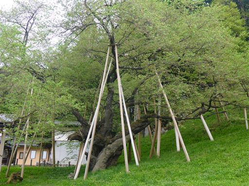
本日は、まず飛騨大鍾乳洞に向かう。
駐車場の側に日本一宿儺鍋という直径6.1mの大鍋が置かれている。
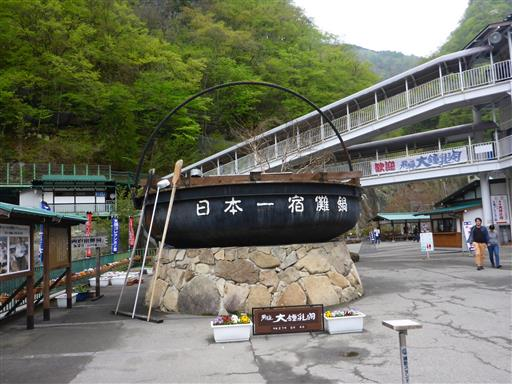
鍾乳洞に入洞する。

様々な色のライトアップがなされていて美しい。足元も整備はばっちりだ。
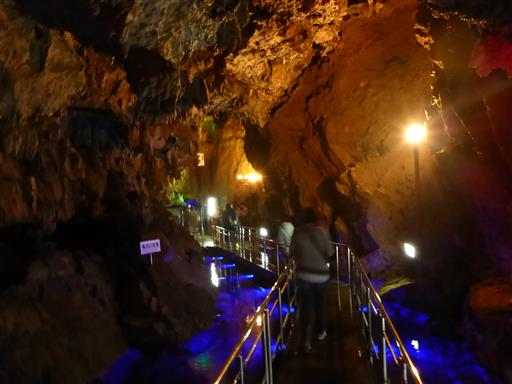
立派な鍾乳石が見られる。
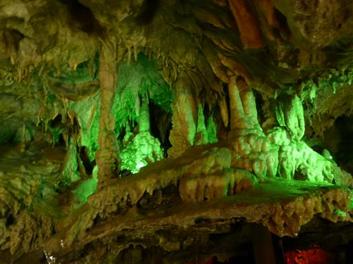
ヘリクタイト。左右にねじれながら垂れる珍しい鍾乳石らしい。

石筍。ライトアップがないと真白だ。
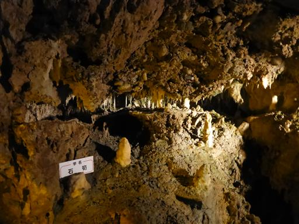
涼しい環境を利用して、地酒が保存されている。
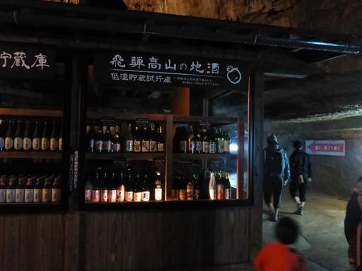
国会議事堂。ちょっと無理があるかも。
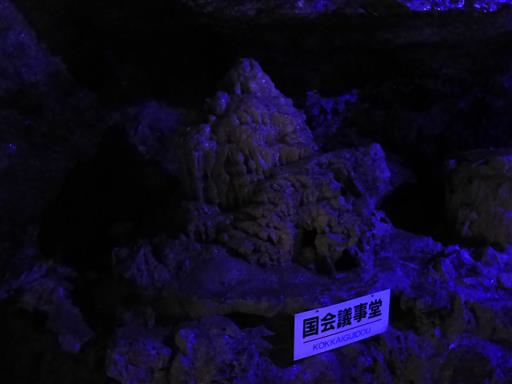
長い渡り廊下を歩く。この辺りは人工的なトンネルだ。
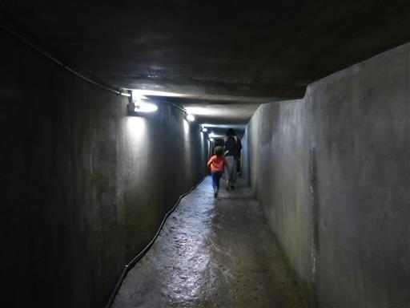
うどの栽培が行われている。
日光を当てずに栽培すると軟化うどになり、高級食材にされるそうだ。
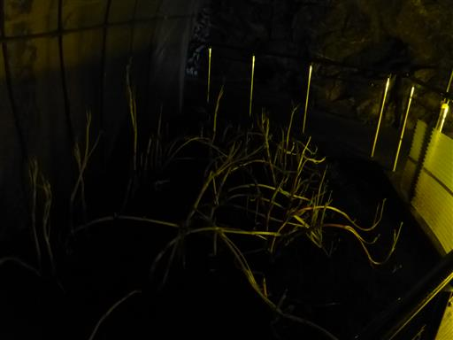
洞窟内部は階段が多い。結構登る必要がある。
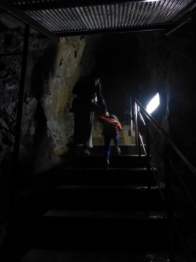
王冠。そう見えなくもない。
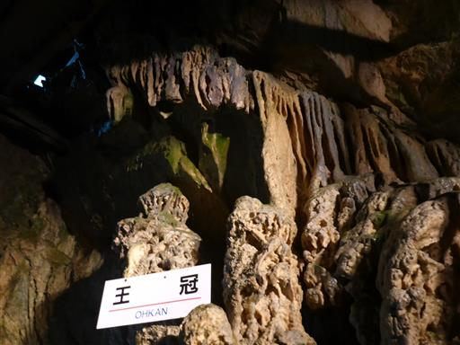
出口付近は天井が高い。
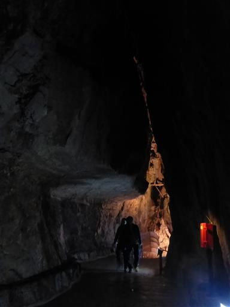
洞窟を出る。子供たちは閉鎖された洞窟内が落ち着かなかったようで、
終始急かされてゆっくり観光できなかった。
洞窟内でずいぶん登ったので、駐車場まで坂道を下って行く。
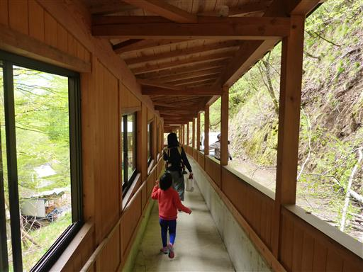
石灰岩の白い岩壁を見上げる。
鍾乳洞とは石灰岩が浸食されてできた洞窟のことだ。
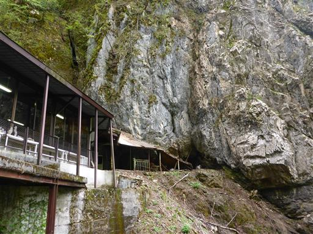
洞窟の外には土産物屋などが軒を連ねている。
娘は手作りのししおどしに興味津々だ。
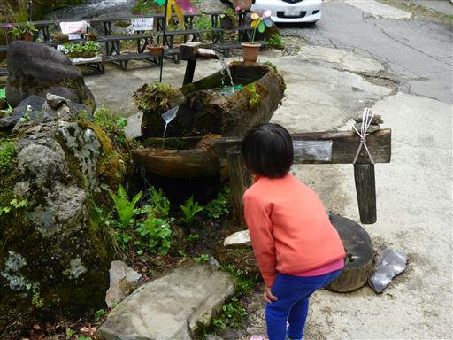
鍾乳洞の見学を終えたら、続いて平湯大滝に向かう。
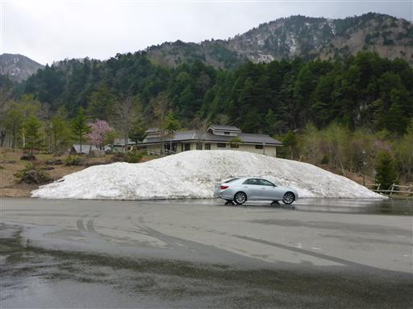
娘はあえて残雪の上を歩いている。
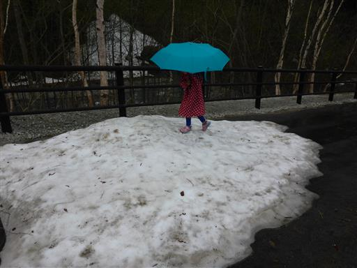
15分ほど歩くと滝が見えてきた。

平湯大滝。落差64m、幅6mの直瀑でなかなか立派だ。
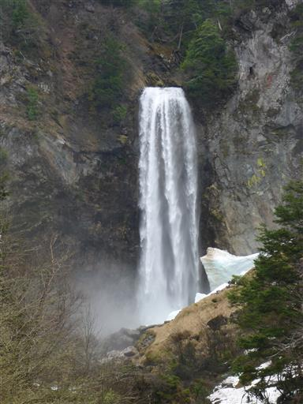
さらに少し細い道を歩いて滝に近づく。
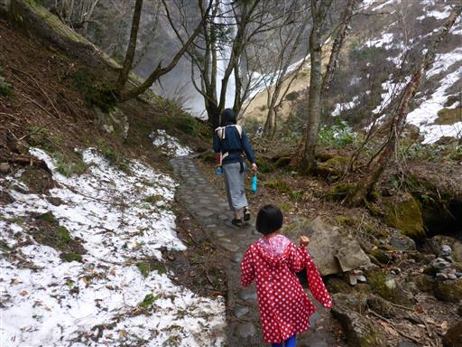
ある程度まで滝に近づけるが、ここで行き止まりでこれ以上は近づけない。
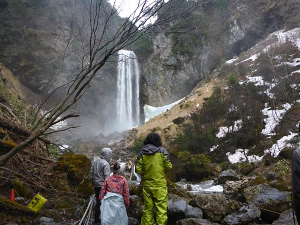
駐車場の側にあった足湯に寄って行く。平湯温泉の湯だ。
子供たちにとっては初めての足湯で、息子は足をバチャバチャさせて遊んでいた。
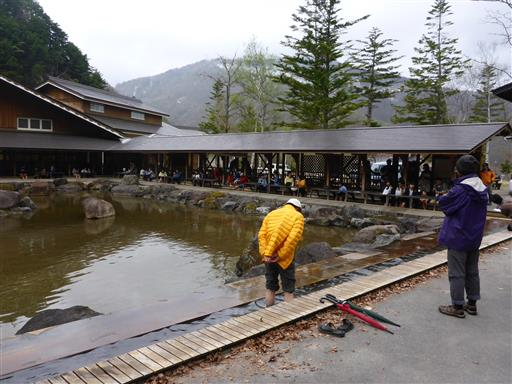
平湯温泉「ひらゆの森」施設内のレストランで昼食をとる。
施設内は温泉もレストランも大混雑だった。
今日は雨が降ったり止んだりだったが、何とか観光を終え、帰宅の途に就く。
高山は遠かったが、様々な観光地を巡れて充実した旅行だった。
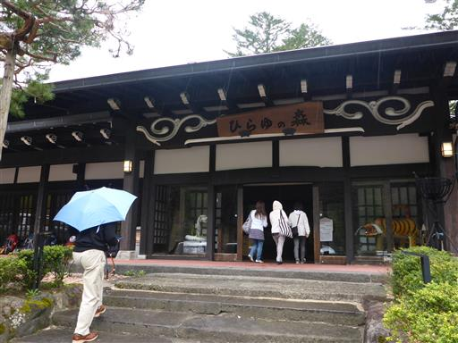